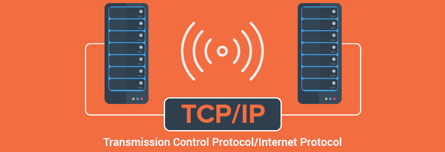

TCP/IP is a set of communication protocols that allow devices to connect and transmit data over the internet.
TCP/IP is a set of communication protocols that allows devices to connect and exchange data over the internet. When data is sent from one computer to another, TCP breaks it into small packets. These packets are then sent across the network using IP, which is responsible for addressing and routing them to the correct destination. Once the packets reach the destination, TCP reassembles them in the correct order to form the original message or file. This process ensures that data is delivered accurately and reliably, even if some packets take different routes through the network.TCP/IP also ensures data integrity by checking for errors and retransmitting lost packets during communication.
TCP/IP is important because it is the foundation of internet communication. It allows different devices and networks to communicate with each other regardless of their hardware or software differences. It also ensures reliable data transfer by checking for errors, re-sending lost packets, and maintaining the correct order of data. Without TCP/IP, the internet as we know it would not function, because devices would not be able to send and receive data efficiently or reliably.